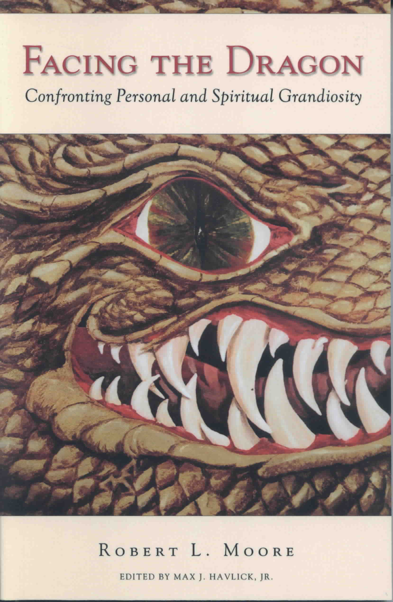

|
| Dr. Robert Moore is an internationally recognized Jungian psychoanalyst and consultant
in private practice in Chicago, Illinois, USA. He is: the Distinguished Service Professor
of Psychology, Psychoanalysis and Spirituality in the Graduate Center of the Chicago
Theological Seminary; a Training Analyst at the C.G. Jung Institute of Chicago; and,
Director of Research for the Institute for the Science of Psychoanalysis. Author and
editor of numerous books in psychology and spirituality, he lectures internationally on
his formulation of a Neo-Jungian paradigm for psychotherapy and psychoanalysis. His most
recent book is FACING THE DRAGON: CONFRONTING PERSONAL AND SPIRITUAL GRANDIOSITY. He is
currently working on his STRUCTURAL PSYCHOANALYSIS AND INTEGRATIVE PSYCHOTHERAPY:
A NEO-JUNGIAN PARADIGM. |
The Dawn of Consciousness
For Clinicians
-- -- -- --
For Individuals
|
NEWS!
Visit with and learn from DR. MOORE
at one of his many Summer Events!
Dr. Moore has several Summer 2006 Events scheduled. Click here for
complete list: EVENTS 2006.
|

More Information
Order
Today!
|
Facing the Dragon: Confronting Personal and Spiritual Grandiosity
"If you would understand the deepest roots of terrorism, greed, and religoius fanaticism,
read Facing the Dragon. But be forwarned: you may find some offshoots in your own garden."
June Singer
Jungian analyst, author of Boundaries of the Soul
"I like this book very much. It extends the work of Kohut and others on grandiosity, that mysterious
overestimation of ourselves that often disturbs our childhood. If this grandiosity is quashed too early, it is
a disaster. If it is not disciplined at all, it is equally damaging. The question is what to do with
the God energy in a time of secularism. Moore gives frightening answers to questions people haven't even
begun to ask. This is a brave and important book."
Robert Bly
Author of Iron John, The Sibling Story Society, and The Insatiable Soul
|
Dr. Moore also has several events planned for the coming months including
Advanced Seminars for clinicians and workshops for men. Check out
the Events Calendar for details!
|
|